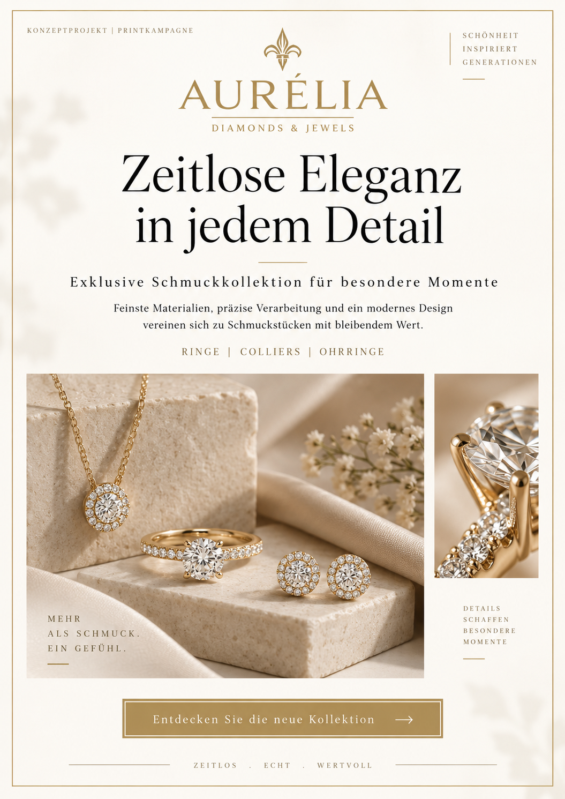

01
KONZEPTPROJEKT · PRINT
AURÉLIA — Schmuckkampagne
Entwicklung eines hochwertigen A4-Flyers für eine fiktive Schmuckmarke. Ziel war eine elegante, ruhige Bildsprache mit klarer Typografie, hochwertiger Produktwirkung und großzügigem Weißraum.